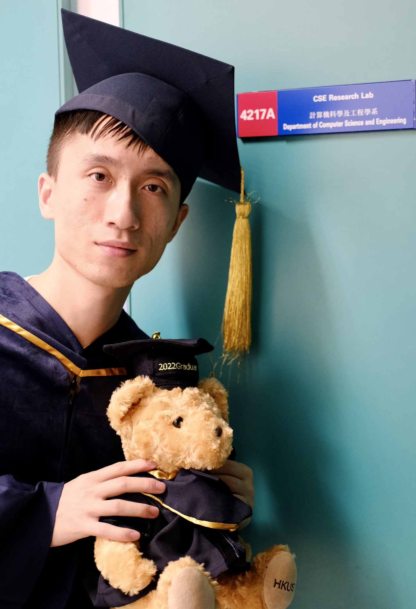

|  |
Yilei Wang 王义磊
|
I am research scientist in the database and storage lab of Alibaba DAMO academy. My research focus includes data security privacy.
| SecYan | C++ | Two-party secure join-aggregate query processing based on the secure Yannakakis protocol |
| Tieba Spider | Python | Spider for Baidu Tieba. Crawl threads, posts, and comments, and store them into MySQL database |
| StopWatch | C# | A multifunctional stopwatch that is pinned on top of other open applications |
| QSanguosha-Lua | Lua | DIY generals for QSanguosha |
| Since 2022 | Research scientist in Database and Storage Lab, Alibaba DAMO Academy |
| 2017 to 2022 | Research postgraduate in Department of CSE, HKUST Supervised by Prof. Ke Yi |
| 2013 to 2017 | Qiushi Persuit Science Class (Math), Chu Kochen Honors College, Zhejiang University |
| Since Spring 2021 |
Alibaba Innovative Research (AIR) Remote Collaboration with DAMO Academy, Alibaba Implementing a relational database system that supports secure query evaluation on databases across multiple parties |
| Jan 2019 to May 2019 |
Alibaba Innovative Research (AIR) Internship in Alibaba, Hangzhou Implemented Wander Join algorithm into a database system named AnalyticDB Did research on efficient distinct count estimation algorithm |
| Mar 2017 to Jun 2017 |
Game Development Intern in LeiHuo Technology, Netease, Hangzhou Contributed to developing a MMORPG named NiShuiHan Online Designed strategies for robots to fight with human players Designed player simulators for both server side and client side |
| Summer 2016 | Research Intern in Department of Computer Science, The University of Hong Kong
Thesis under the supervision of Prof. Chuan Wu: Reward Bound Estimation in Multi-armed Bandit [pdf] |